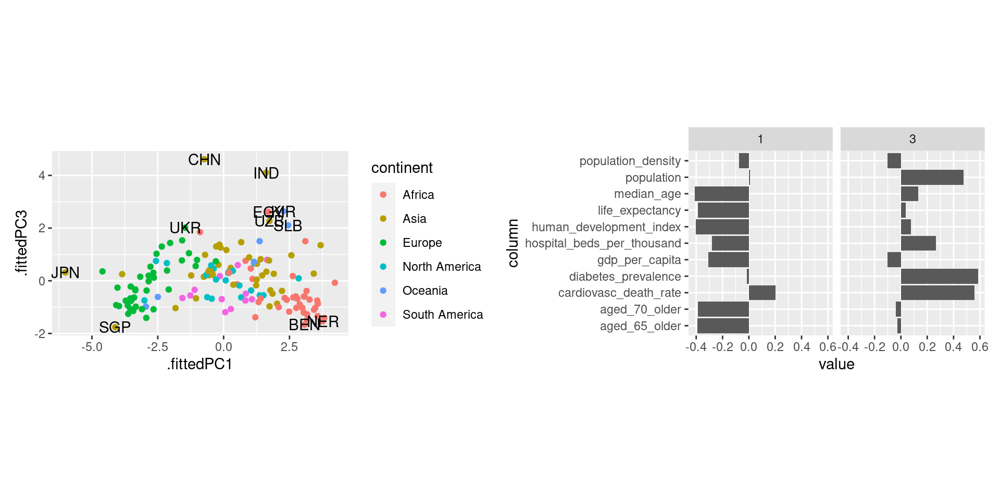

W#12: Probability
Math: Probability
Probability Topics for Data Science
Today concepts and topics
- The concept of probability form the mathematical perspective.
- What are probabilistic events, probability functions and random variables.
- How do random variables relate to data?
- (Binomial distribution)
Events as subsets of a sample space
Sample space, atomic events, events
In the following, we say \(S\) is the sample space which is a set of atomic events.
Example for sample spaces:
- For a coin toss the atomic events are \(H\) (for HEADS) and \(T\) for TAILS, and the sample space is \(S = \{H,T\}\).
- For the selection of one person of a group of \(N\) individuals labeled \(1,\dots,N\), the sample space is \(S = \{1,\dots,N\}\).
- For two successive coin tosses the atomic events are \(HH\), \(HT\), \(TH\), and \(TT\). The sample space is \(\{HH,HT, TH, TT\}\). Important: The atomic events for two coin tosses tare not \(H\) and \(T\).
An event \(A\) is a subset of the sample space \(A \subset S\).
Important: Note the difference of atomic events and events.
Example events for one coin toss
- The set with one atomic event is a subset \(\{H\} \subset \{H,T\}\).
- Also the sample space \(S = \{H,T\} \subset \{H,T\}\) is an event. It is called the sure event.
- Also the empty set \(\{\} = \emptyset \subset \{H,T\}\) is an event. It is called the impossible event.
- In interpretation, the event \(\{H,T\}\) means: The coin comes up HEAD or TAIL.
- The empty set is interpreted as the event that it comes up neither HEADS nor TAILS.
More example events
- 2 coin tosses: The event \({HH, TH}\) means “The first toss comes up HEAD or TAIL and the second is HEADS.”
- The event \({HT, TH, HH}\) means that “We have HEAD once or twice and it does not matter what coins.”
- The event \({TT, HH}\) means “Both coins show the same side.”
Quiz questions for three coin tosses:
- What is the event “The coins show one HEAD”? \(\{HTT, THT, TTH\}\)
- What is the event “The first and the third coin are not HEAD? \(\{THT, TTT\}\)
- How many atomic events exist? \(2^3=8\)
For selecting one random person:
The event \(\{2,5,6\}\) means that the selected person is either 2, 5, or 6. (Not all three people which is a different random variable!)
The set of all events and the probability function
The set of all events
The collection of all events is called a sigma-algebra. (This is a mathematical term which linguistic meaning we do not analyze deeper here.)
Definition: A sigma-algebra \(\mathcal{F}(S)\) is a collection of subsets of a sample space \(S\) when it has the following properties
- The empty set (the impossible event) is part of it \(\emptyset \in \mathcal{F}(S)\)
- When \(A \in \mathcal{F}(S)\) then its complement \(A^c \in \mathcal{F}(S)\). That means: For any event \(A\) also its opposite \(A^c = S \setminus A\) (read \(S\) minus the elements of \(A\)) is an event.
- \(\mathcal{F}(S)\) is closed under the countable set union of its members. That means if \(A_1,A_2,A_3, \dots \in \mathcal{F}(S)\) the \(\bigcup_{i}^\infty A_i = A_1 \cup A_2 \cup A_3 \cup \dots \in \mathcal{F}(S)\).
The mathematical technicality is not central here. Important is: The sigma-algebra is the set of all possible events and this is usually larger / more complex then one may naively think.
The power set
- A sigma-algebra \(\mathcal{F}(S)\) is a subset of the set of all subsets (also called power set) of the sample space sometimes denoted \(\mathcal{P}(S)\) or \(2^S\).
- The notation \(2^S\) matches the fact that the power set of a set with \(n\) elements has \(2^n\) elements.

Example powerset of a three element set.
Example for the set of all events
- For 3 coin tosses: How many events exist? \(2^3=8\) atomic events \(\to\) \(2^8=256\) event
- How is it for four coin tosses? \(2^{(2^4)} = 65536\)
- We select two out of five people at random (without replacement). How many atomic events? How many events?
The number of atomic events can be computed by “n choose k” \({n \choose k} =\frac{n!}{(n-k)!k!}\). Here: \({5\choose 2}\).
Thus there are \(2^{10} = 1024\) event.
Example event: “Person 1 is among the selected.” = \(\{12, 21, 13, 31, 14, 41, 15, 51\}\)
These are typical problems of combinatorics, the theory of counting, which is basic for many probability models. We do not go deeper into it here.
Probability function
Definition: For a collection of events (in a sigma-algebra \(\mathcal{F}(S)\)) a function \(\text{Pr}: \mathcal{F}(S) \to \mathbb{R}\) is a probability function when
- The probability of any event is between 0 and 1: \(0\leq \text{Pr}(A) \leq 1\). (So, actually a probability function is a function \(\text{Pr}: \mathcal{F}(S) \to [0,1]\).)
- The probability of the event coinciding with the whole sample space (the sure event) is 1: \(\text{Pr}(S) = 1\).
- For events \(A_1, A_2, \dots, A_n \in \mathcal{F}(S)\) which are pairwise disjoint we can sum up their probabilities:
\[\text{Pr}(A_1 \cup A_2\cup\dots\cup A_n) = \text{Pr}(A_1) + \text{Pr}(A_2) + \dots + \text{Pr}(A_n) \]
This captures the essence of how we think about probabilities mathematically. Most important: We can only easily add probabilities when they do not share atomic events.
Some basic probability rules
- We can compute the probabilities of all events by summing the probabilities of the atomic events in it. So, the probabilities of the atomic events are building blocks for the whole probability function.
- \(\text{Pr}(\emptyset) = 0\)
- For any events \(A,B \subset S\) it holds
- \(\text{Pr}(A \cup B) = \text{Pr}(A) + \text{Pr}(B) - \text{Pr}(A \cap B)\)
- \(\text{Pr}(A \cap B) = \text{Pr}(A) + \text{Pr}(B) - \text{Pr}(A \cup B)\)
- \(\text{Pr}(A^c) = 1 - \text{Pr}(A)\)
Recap from the motivation of logistic regression: When the probability of an event is \(A\) is \(\text{Pr}(A)=p\), then its odds (in favor of the event) are \(\frac{p}{1-p}\). The logistic regression model “raw” predictions are log-odds \(\log\frac{p}{1-p}\).
Random variables to assign number to atomic events
Random variable
- A random variable is a numerical function where values come with probabilities.
- In some statistical model, we consider variables in a data frame as random variables, for example the response variable in a generalized linear model.
Formally, a random variable is
- a function \(X: S \to \mathbb{R}\)
- which assigns a value to each atomic event in the sample space.
Together with a probability function \(\text{Pr}: \mathcal{F}(S)\to [0,1]\) probabilities can be assigned to values of the random variable (see the probability mass function in two slides).
Examples of random variables
- For two coin tosses a random variable can be the number of HEADS. In this case, each atomic event is mapped to a number: Either 0, 1, or 2.
- For 62 randomly selected organ donations a random variable can be the number of complications. Each atomic event is mapped to an integer from 0 to 62. (Note, an atomic event are 62 randomly selected organ donations. So, the set of events is \(2^62 \approx 4.61\cdot 10^{18}\).)
- In the palmer penguins dataset we can consider a variable, e.g. flipper length, to be a random variable. The atomic event would be the random selection of a penguin and the random variable is its flipper length. So we map each penguin to its flipper length.
A random variable is a way to look at a numerical aspect of a sample space. It often simplfies because many atomic events may be mapped to the same number.
Probability mass function (pmf)
For
- a random variable \(X\) and
- a probability function \(\text{Pr}\)
the probability mass function \(f_X: \mathbb{R} \to [0,1]\) is defined as
\[f_X(x) = \text{Pr}(X=x),\]
where \(\text{Pr}(X=x)\) is an abbreviation for \(\text{Pr}(\{a\in S\text{ for which } X(a) = x\})\).
Example pmf for 2 coin tosses
Two coin tosses \(S = \{HH, HT, TH, TT\}\)
- We define \(X\) to be the number of heads:
\(X(HH) = 2\), \(X(TH) = 1\), \(X(HT) = 1\), and \(X(TT) = 0\).
- We assume the probability function \(\text{Pr}\) assigns for each atomic event a probability of 0.25.
- Then the probability mass function is \[\begin{align} f_X(0) = & \text{Pr}(X=0) = \text{Pr}(\{TT\}) & = 0.25 \\ f_X(1) = & \text{Pr}(X=1) = \text{Pr}(\{HT,TH\}) & = 0.25 + 0.25 = 0.5 \\ f_X(2) = &\text{Pr}(X=2) = \text{Pr}(\{HH\}) & = 0.25\end{align}\]
- Note that \(\text{Pr}(\{HT,TH\}) = \text{Pr}(\{HT\}) + \text{Pr}(\{HT\})\) by adding the probabilities of the atomic events.
- For all \(x\) which are not 0, 1, or 2 it is obviously \(f_X(x) = 0\).
Example: Roll two dice üé≤ üé≤
Random variable: The sum of both dice.
Events: All 36 combinations of rolls 11, 12, 13, 14, 15, 16, 21, 22, 23, 24, 25, 26, 31, 32, 33, 34, 35, 36, 41, 42, 43, 44, 45, 46, 51, 52, 53, 54, 55, 56, 61, 62, 63, 64, 65, 66
Attention, these are not 2-digit numbers! 11 does not mean eleven but 1 and 1.
Possible values of the random variable: 2, 3, 4, 5, 6, 7, 8, 9, 10, 11, 12 (These are numbers.)
Probability mass function: (Assuming each number has probability of \(\frac{1}{6}\) for each die.)
\(\text{Pr}(2) = \text{Pr}(12) = \frac{1}{36}\)
\(\text{Pr}(3) = \text{Pr}(11) = \frac{2}{36}\)
\(\text{Pr}(4) = \text{Pr}(10) = \frac{3}{36}\)
\(\text{Pr}(5) = \text{Pr}(9) = \frac{4}{36}\)
\(\text{Pr}(6) = \text{Pr}(8) = \frac{5}{36}\)
\(\text{Pr}(7) = \frac{6}{36}\)
Binomial distribution
Binomial distribution
The number of HEADS in several coin tosses and the number of complications in randomly selected organ donations are examples of random variable which have a binomial distribution.
Definition: The binomial distribution with parameters \(n\) and \(p\) is the number of successes in a sequence of \(n\) independent Bernoulli trials which each delivers a success with probability \(p\) and a failure with probability \((1-p)\).
- The default model for the number of successes drawn from a sample of size \(n\) drawn from a population of size \(N\) with replacement.
- When \(N\) is much larger than \(n\) it is also a good approximation for drawing without replacement.
Binomial probability mass function
\[f(k,n,p) = \Pr(k;n,p) = \Pr(X = k) = \binom{n}{k}p^k(1-p)^{n-k}\]
where \(k\) is the number of successes, \(n\) is the number of Bernoulli trials, and \(p\) the success probability.
Probability to have exactly 3 complications in 62 randomly selected organ donations with complication probability \(p=0.1\) is
The probability to have 3 complications or less can be computed as
This was the p-value we computed with simulation for the hypothesis testing example.
Distribution functions are vectorized!
Compute the p-value:
Plotting the probability mass function
Other plots of binomial mass function
Changing the sample size:
The probability of 3 successes is most likely for samples sizes around 30. Sensible?
Changing the success probability:
The probability of 3 successes is most likely for success probabilities around 0.05.
Expected value discrete RV
A discrete random variable takes only a finite (or at least discrete) set of values.
For \(X: S \to \mathbb{R}\), when \(S\) is finite, there is naturally only a set of values \(x_1,\dots,x_k\in\mathbb{R}\) which \(X\) can be. We call their probabilities \(p_1,\dots,p_k\) with \(p_i = \text{Pr}(X=x_i) = \text{Pr}(\{a \in S \text{ for which } X(a) = x_i \})\).
(The probability of all other values in \(\mathbb{R}\) is zero.).
The expected value of \(X\) is \(E(X) = \sum_{i=1}^k p_i x_i = p_1x_1 + \dots + p_kx_k.\)
Examples: \(X\) is a die roll üé≤. \(E(X) = 1\cdot\frac{1}{6} + 2\cdot\frac{1}{6} + 3\cdot\frac{1}{6} + 4\cdot\frac{1}{6} + 5\cdot\frac{1}{6} + 6\cdot\frac{1}{6} = \frac{21}{6} = 3.5\)
\(X\) sum of two die rolls üé≤üé≤.
$E(X) = 2 + 3 + 4 + 5 + 6 + 7 + 8 + $
$ + 9 + 10 + 11 + 12 = 7$
Expected value binomial distribution
For \(X \in \text{Binom}(n,p)\) (read “\(X\) has a binomial distribution with samplesize \(n\) and success probability \(p\)”)
The expected value of \(X\) is by definition
\[E(X) = \underbrace{\sum_{k = 0}^n k}_{\text{sum over successes}} \cdot \underbrace{\binom{n}{k}p^k(1-p)^{n-k}}_{\text{probability of successes}}\]
Computation shows that \(E(X) = p\cdot n\).
Example: For \(n = 62\) organ donations with complication probability \(p=0.1\), the expected number of complications is \(E(X) = 6.2\).
Distribution Functions
General systematic of functions for distributions in R
In R we usually have 4 function for each distribution: The d, p, q, and r version. For the binomial distribution:
dbinomthe density function (more on the name later)pbinomdistribution functionqbinomthe quantile function, andrbinomrandom number generator.
Probability mass function d
- The mass function (or density function, more on this later)
dbinom
Gives the probability for the number \(x\): \(\text{Pr}(X = x)\) or \(f_X(x)\).
Distribution function p
- The distribution function, or cumulative probability function
pbinom
Gives the probability that the random variable is less or equal to \(x\):
\(\text{Pr}(X \leq x)\).
Quantile function q
- The quantile function,
qbinomwith argument \(p\) representing the fraction of lowest values of \(X\) among all values for which we want the \(x\) value for.
A point \((p,x)\) means: When we want a \(p\)-fraction of the probability mass, we need all events with values lower or equal to \(x\).
Calculus relations
Quantile, distribution and mass function all carry the full information about the distribution of a random variable \(X\).
The mass function is the derivative of the distribution function.
(The distribution function is the anti-derivative of the mass function.)
[1] 0.03125 0.18750 0.50000 0.81250 0.96875 1.00000# Next comes its derivative (have to append a 0 before first)
pbinom(0:5, size = 5, prob = 0.5) |> append(0, after = 0) |> diff()[1] 0.03125 0.15625 0.31250 0.31250 0.15625 0.03125[1] 0.03125 0.15625 0.31250 0.31250 0.15625 0.03125[1] 0.03125 0.18750 0.50000 0.81250 0.96875 1.00000More calculus relations
- The quantile function is the inverse of the distribution function.
- We plot the inverse function by interchanging the
xandyaesthetic.
probs <- seq(0, 1, by = 0.01)
x <- 0:10
q <- tibble(p = probs) |> mutate(x = qbinom(p, size = 10, prob = 0.5))
p <- tibble(x = x) |> mutate(p = pbinom(x, size = 10, prob = 0.5))
q_plot <- q |> ggplot(aes(p, x)) + geom_line()
qinv_plot <- q |> ggplot(aes(x, p)) + geom_line()
p_plot <- p |> ggplot(aes(x, p)) + geom_col()
pinv_plot <- p |> ggplot(aes(p, x)) + geom_col(orientation = "y")
library(patchwork)
(q_plot | p_plot) / (pinv_plot | qinv_plot)Random number generator r
- Random binomial numbers are drawn with
rbinom
# 10 random binomial numbers for 62 trials with success probability 0.1
rbinom(10, size = 62, prob = 0.1) [1] 7 6 6 7 6 13 6 6 5 6- We can reproduce the null distribution from hypothesis testing with 62 organ donations and 10% complication probability this way.
- We produce 100,000 random consultants
- Then we compute the fraction of which have 3 or less complications
Empircal distributions
- \(X\): select a random person from Europe (in 2018, willing to answer survey) and ask its attitude towards the European union from 0 to 10
- What is the distribution of the answer?
# A tibble: 11 × 3
euftf n prob
<dbl> <int> <dbl>
1 0 3361 0.0736
2 1 1787 0.0391
3 2 2830 0.0620
4 3 3586 0.0786
5 4 3739 0.0819
6 5 10286 0.225
7 6 4589 0.101
8 7 5165 0.113
9 8 4692 0.103
10 9 1786 0.0391
11 10 3826 0.0838What could be next?
- Continuous distribution function
- Theoretical and empirical
- The central limit theorem and why it is important empirically
- Independence of probabilistic events
- Conditional probability and the confusion matrix
- Markov chains
Principal component analysis (PCA)
PCA Description
Principle component analysis
- is a dimensionality-reduction technique, that means it can be used to reduce the number of variables
- computes new variables (the principal components) which represent the data in a different way
- transforms the data linearly to a new coordinate system where most of the variation in the data can be described with fewer variables than the original data
- can be seen as unsupervised learning technique because there is no response variable. (Response variable are often produced/supervised by humans for training, e.g., a spam dummy.)
Today: Quick walk through how to use and interpret it.
“Other” data of OWiD Corona data
- Select the variables listed as Others in the OWiD corona data documentation
- Remove those which have many
NAs
owid <- read_csv("data/owid-covid-data.csv")
owid_inds <- owid |>
# Filter for one day and remove rows where continent is NA
# These are rows with data for continents or world regions
filter(date == "2022-10-01", !is.na(continent)) |>
# These are the "Other" variables
select(iso_code, continent, location,
population:human_development_index) |>
# We remove the ones with many NA's
select(-handwashing_facilities, -male_smokers,
- female_smokers, -extreme_poverty) |>
drop_na()
owid_inds |> count(continent)# A tibble: 6 × 2
continent n
<chr> <int>
1 Africa 39
2 Asia 42
3 Europe 39
4 North America 20
5 Oceania 6
6 South America 12We have 158 countries and 11 numeric variables.
Two Variables
Example for the new axes.
Computation in R
The basic function is base-R’s prcomp (there is an older princomp which is not advisable to use).
These 3 commands all deliver identical results for prcomp
# prcomp can take a formula with no response variable as 1st argument
P <- prcomp(~ median_age + life_expectancy, data= owid_inds)
# prcomp can take a data frame with all numerical vectors as 1st argument
P <- owid_inds |> select(median_age, life_expectancy) |> prcomp()
# This is an example using the formula placeholder "." for 'take all
# and the pipe's placeholder "_" which one uses when the output should be
# piped to an argument other than the 1st
P <- owid_inds |> select(median_age, life_expectancy) |> prcomp(~ ., data= _)The standard output
The prcomp object
Includes 4 different related entities.
The standard deviations related to each principal component.
The matrix of variable loadings. (It is also the matrix which rotates the original data vectors.)
The means for each original variable.
Note, there are also standard deviations of original variables in $scale when this is set to be used.
The centered (scaled, if set) and rotated data.
PC1 PC2
1 -15.30147798 -0.30158529
2 8.46967981 -0.01934856
3 0.27527455 -3.88170827
4 2.78495581 -2.23213257
5 2.41746174 -2.06645786
6 4.56375002 1.44493027
7 11.25046735 -4.01861358
8 15.39339097 1.33826834
9 0.66547151 1.19688861
10 2.74344303 1.56895631
11 3.18635423 -2.27431439
12 -3.54022934 -1.35069463
13 10.29045200 0.53669877
14 8.10950037 4.39071615
15 13.34251723 -0.26236181
16 -4.37020966 -4.46229111
17 -16.93776248 2.29190137
18 -3.12614815 -0.04891248
19 -5.87404744 -1.71082388
20 11.42328837 3.57162574
21 -6.67861938 0.07776886
22 3.24786441 -0.48704930
23 2.34605999 -1.11724672
24 11.82248935 6.76586095
25 -18.02037585 1.74049561
26 -18.10128967 1.68173378
27 -6.70529480 -0.22585660
28 -18.39505599 4.29856418
29 13.48895662 -1.14471974
30 -4.76750699 -2.72397157
31 -22.33121139 8.86767576
32 7.31198595 -2.84986882
33 8.06063011 1.73515374
34 3.02452659 -2.39183806
35 -14.14471452 1.16878824
36 5.91429898 -3.98849568
37 13.27749971 3.57109260
38 9.31944327 -2.38070454
39 13.23408329 2.43962673
40 13.31812495 0.62211827
41 -8.45956818 1.84938433
42 -2.58376417 -2.49754876
43 -0.45747329 -4.57451459
44 -5.67290445 -2.15797206
45 -3.03035412 -1.88260370
46 -15.80534846 6.85901626
47 -13.85952988 -1.09586840
48 12.37252460 2.60490418
49 -15.68152626 5.15690932
50 -13.29042762 -1.02861793
51 -5.67641179 3.46274744
52 14.31618860 0.09869783
53 14.10959178 -0.97825052
54 -10.69666185 1.01571059
55 -17.82510905 1.30143881
56 6.21550849 4.27584778
57 17.05009523 2.80094774
58 -13.72522235 1.78240564
59 16.53294823 1.30072809
60 -2.11451419 -0.08048350
61 -6.25743781 -5.43736541
62 -16.87582996 2.54697854
63 -6.08601239 0.11265381
64 -11.17711330 3.71942404
65 -4.06917156 -5.04699279
66 11.84595123 4.52123414
67 10.50055615 -4.00707238
68 -4.69555434 1.43141323
69 -2.59500849 0.41096866
70 2.82790704 -1.78074007
71 -10.77812658 -4.14764718
72 11.22789301 -2.62610131
73 5.06757765 -7.92793256
74 19.38298293 1.80093025
75 0.72013226 -0.58016293
76 20.28385695 1.07098094
77 -5.87954413 -5.44718170
78 -0.43840629 -0.34630735
79 -13.06983814 -0.99200808
80 -9.49927316 -0.46289021
81 3.18052090 -0.05396172
82 -5.18108013 -1.13341907
83 -8.79273555 0.60636402
84 11.31620717 6.10157310
85 3.09816863 -4.36520494
86 -15.24495644 0.64165663
87 -2.13848412 -0.72819134
88 11.36862762 5.34867729
89 12.00765033 -1.99802605
90 -13.19370320 -1.50216242
91 -16.04098955 -0.13418567
92 0.49949992 -2.82903407
93 -20.32523538 2.87209737
94 14.35685668 -0.63801521
95 5.88052317 2.52479529
96 -0.63823938 -2.28346164
97 4.22661012 5.14255609
98 -4.24849920 1.49654154
99 8.36665685 1.99447523
100 0.56232000 -3.42607145
101 -18.36842342 2.38992835
102 -5.45400436 4.00738947
103 -6.62666413 -1.35520031
104 14.85726268 0.03436403
105 10.57470625 -3.08810461
106 -2.59145830 -2.99748955
107 -19.54962201 -0.40822638
108 7.73202903 2.86834452
109 12.09579308 -2.11939679
110 2.14576170 -3.73447438
111 -9.90291188 0.60344735
112 1.71857540 -4.84803258
113 -3.37392111 -3.28148244
114 0.19300798 -3.76842892
115 -6.20040822 -1.60178884
116 11.63842401 2.08413905
117 17.14952515 1.98332087
118 4.50938307 -4.94698996
119 11.03457271 4.95777153
120 6.24446705 5.76757879
121 4.56869580 0.07669216
122 -0.09619205 1.22461257
123 -11.95340613 -4.74163201
124 1.51252948 -0.82038499
125 3.97524412 3.10618305
126 14.99736068 -1.51997588
127 10.45367524 2.69444253
128 15.34502876 1.57504058
129 -8.72053195 -5.61948425
130 -8.67330823 5.37709112
131 15.45980409 -0.45496597
132 17.47043209 0.35018930
133 4.37972753 -1.02453034
134 -14.12936912 -0.04359145
135 -2.37577176 0.61961970
136 13.38272012 -1.67914822
137 15.65777638 -1.23810515
138 -7.81416124 -2.61307574
139 -15.65950282 -1.34019889
140 9.33445203 2.36362626
141 -13.04278322 -4.43283183
142 -16.88124094 3.23514328
143 -8.73494696 -3.04695782
144 4.03988214 3.01717785
145 3.08240087 -1.62063733
146 2.77409099 -3.06806436
147 -17.93950488 -0.41300384
148 7.39535433 7.24604370
149 4.88055588 -1.88433903
150 12.35121731 -0.59914731
151 8.88283060 -0.07771314
152 6.13991994 -0.89560137
153 -3.48506054 -0.23541152
154 -2.63795972 -0.04042384
155 2.23758320 -0.62751947
156 -13.16791532 -0.34642241
157 -16.58206363 -0.06985186
158 -16.45498504 2.98855475PCA as Exploratory Data Analysis
Suppose we do a PCA with all 158 countries (rows) and all 11 numeric variables.
- How long will the vector of standard deviations be? 11
- What dimensions will the rotation matrix have? 11 x 11
- What dimensions will the rotated data frame have? 158 x 11
When we do a PCA for exploration there are 3 things to look at:
- The data in PC coordinates - the centered (scaled, if set) and rotated data.
- The rotation matrix - the variable loadings.
- The variance explained by each PC - based on the standard deviations.
All variables
Now, with scale = TRUE (recommended). Data will be centered and scaled (a.k.a. standardized) first.
owid_PCA <- owid_inds |> select(-iso_code, -continent, -location) |>
prcomp(~ ., data = _, scale = TRUE)
owid_PCAStandard deviations (1, .., p=11):
[1] 2.34241265 1.22235717 1.03373351 0.99489682 0.92287148 0.66475775
[7] 0.58432716 0.45329540 0.25966139 0.21927321 0.06713354
Rotation (n x k) = (11 x 11):
PC1 PC2 PC3 PC4
population 0.008865647 -0.03734342 0.47595823 0.870416239
population_density -0.074719077 -0.46044638 -0.10288680 0.046602918
median_age -0.409689271 0.06447942 0.12973022 -0.004468196
aged_65_older -0.390007415 0.24159016 -0.02468961 0.056783114
aged_70_older -0.385548522 0.26731058 -0.03864289 0.046944080
gdp_per_capita -0.307869646 -0.34923225 -0.10326975 -0.049084375
cardiovasc_death_rate 0.203402666 0.30746105 0.55758803 -0.314193965
diabetes_prevalence -0.015935611 -0.52365806 0.58702717 -0.310745215
hospital_beds_per_thousand -0.281461985 0.34868645 0.26585730 -0.180587716
life_expectancy -0.385997705 -0.16628186 0.03523644 -0.001063976
human_development_index -0.401390496 -0.11256612 0.07650908 -0.066730340
PC5 PC6 PC7 PC8
population 0.01039838 -0.1088643 -0.009530076 -0.01188854
population_density 0.85694114 0.1686582 -0.030330909 0.05784099
median_age 0.02964348 0.1083349 0.151566064 -0.04089755
aged_65_older 0.06392873 0.3010299 0.133281270 -0.30838406
aged_70_older 0.04970870 0.2883236 0.134769694 -0.32266678
gdp_per_capita -0.04210924 -0.7155301 0.255572328 -0.38998232
cardiovasc_death_rate 0.30899782 -0.1596115 0.556827122 0.11586467
diabetes_prevalence -0.24595405 0.3128238 -0.194418712 -0.28853159
hospital_beds_per_thousand 0.24614720 -0.3347129 -0.712831766 0.04133735
life_expectancy -0.15876730 0.1057214 0.114444482 0.64382282
human_development_index -0.12068739 -0.1252574 0.075440136 0.36145260
PC9 PC10 PC11
population -0.01568443 0.04316042 0.008103028
population_density 0.01930238 0.04356815 0.017850825
median_age 0.43211922 -0.76462456 0.050093900
aged_65_older -0.12286262 0.19597621 -0.724308013
aged_70_older -0.18333355 0.25044108 0.687015497
gdp_per_capita -0.19559611 -0.02457951 -0.012540620
cardiovasc_death_rate -0.07816501 0.06233211 -0.006416554
diabetes_prevalence -0.04883139 0.05032474 0.006819981
hospital_beds_per_thousand -0.11397971 -0.01992701 -0.007573789
life_expectancy -0.58309459 -0.13429476 -0.009463395
human_development_index 0.60349415 0.53386017 0.010100958Data in PC coordinates
- Start plotting PC1 against PC2. By default these are the most important ones. Drill deeper later.
- Use the function
augmentto append the original data. Here used to draw labels and color by continent. - Note:
augmentalso created the variables names like.fittedPC1
plotdata <- owid_PCA |> parsnip::augment(owid_inds)
plotdata |> ggplot(aes(.fittedPC1, .fittedPC2, color = continent)) +
geom_point() +
geom_text(data = plotdata |>
filter(.fittedPC2< -3 | .fittedPC1< -5 | .fittedPC1>4),
mapping = aes(.fittedPC1, .fittedPC2, label = iso_code),
color = "black") +
coord_fixed() + theme_minimal(base_size = 20)Variable loadings
- The rows of the rotation matrix shows how the original variables load on the principle components.
- We can try to interpret these loadings and give names to components.
tidyextracts the rotation matrix in long format with aPC, acolumn(for the original variable name), and avaluevariable .
Variance explained
- Principle components are by default sorted by importance.
- The squares of the standard deviation for each component gives its variances and variances have to sum up to the number of variables (in the standardized case).
- This way the
tidycommand creates a variablepercentwhich gives the fraction of the total variance explained by each component.
Interpretations (1)

- The first component explains almost 50% of the variance. So most emphasize should be on this.
- To reach more than 75% of the total variance the first four components are needed.
- After the fifth component the added explained variance drops substantially. This is another typical reason to cut off the rest.
- Taking the five components explains 89.9% of the variance of the original 11 variables!
Interpretations (2)
- To score high on PC1 a country needs to be poor, and having few old people.
- PC2 characterizes countries with low population density low diabetes prevalence and low gdp, but a high number of hospital beds, and cardiovascular deaths.
- PC3 characterizes countries with high diabetes prevalence and cardiovascular deaths, but also with large population.
- PC4 focuses mostly on population.
- PC5 mostly on population density.
Interpretations (3)
- To score high on PC1 a country needs to be poor, and having few old people.
- PC2 characterizes countries with low population density low diabetes prevalence and low gdp, but a high number of hospital beds, and cardiovascular deaths.
Interpretations (4)
- To score high on PC1 a country needs to be poor, and having few old people.
- PC3 characterizes countries with high diabetes prevalence and cardiovascular deaths, but also with large population.
Interpretations (5)
- PC2 characterizes countries with low population density low diabetes prevalence and low gdp, but a high number of hospital beds, and cardiovascular deaths.
- PC3 characterizes countries with high diabetes prevalence and cardiovascular deaths, but also with large population.
Interpretations (6)
- PC4 focuses mostly on population.
- PC5 mostly on population density.
Apply PCA
- Besides standardization, PCA may benefit by preprocessing steps of data transformation with variables with skew distributions (log, square-root, or Box-Cox transformation). This may result in less outliers.
- PCA is a often a useful step of exploratory data analysis when you have a large number of numerical variables to show the empirical dimensionality of the data and its structure
- Limitation: PCA is only sensitive for linear relation ships (no U-shaped) or the like
- The can be used as predictors in a model instead of the raw variables.
Properties and relations of PCA
- The principal components (the columns of the rotation matrix) are maximally uncorrelated (actually they are even orthogonal).
- This also holds for the columns of the rotated data.
- The total variances of all prinicipal components sum up to the number of variables (when variables are standardized)
- The PCA is unique. All principle components together are a complete representation of the data. (Unlike other technique of dimensionality reduction which may rely on starting values, random factors, or tuning parameters)
- A technique similar in spirit is factor analysis (e.g.
factanal). It is more theory based as it requires to specify to the theoriezed number of factors up front.